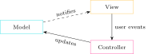

Model
- Subject:
addListener(l),removeListener(l), and on every change callsl.changed(...)on each registered observer. - Observer: an interface with one callback; event handlers are observers of controls.
- MVC: Model (state and rules, no GUI code) → notifies → View (renders) ; View → user events → Controller → updates the Model. The model can be tested without a GUI and shown by several views at once.
- JavaFX properties:
IntegerProperty,StringPropertyare observable;label.textProperty().bind(model.nameProperty())keeps the view in sync automatically.
Picture

Example
public class Counter { // model
private final IntegerProperty value = new SimpleIntegerProperty(0);
public IntegerProperty valueProperty() { return value; }
public void inc() { value.set(value.get() + 1); }
}
Counter model = new Counter();
Label view = new Label(); Button plus = new Button("+");
view.textProperty().bind(model.valueProperty().asString()); // view observes model
plus.setOnAction(e -> model.inc()); // controllerIntuition
The data does not know who is watching; it just announces "I changed", and every interested window redraws itself.
Pitfall
Observers that are never removed keep the subject from being garbage collected and receive updates for windows long closed; register and unregister symmetrically.